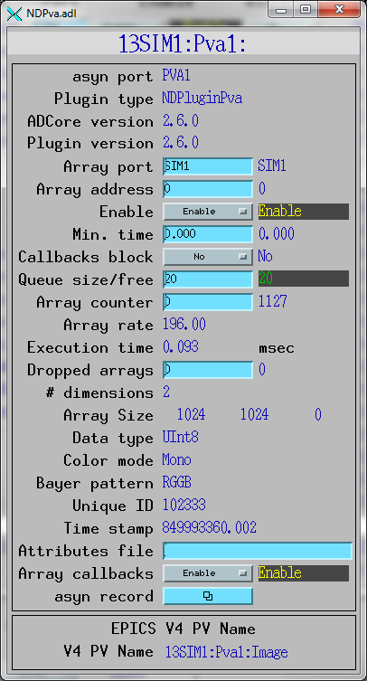
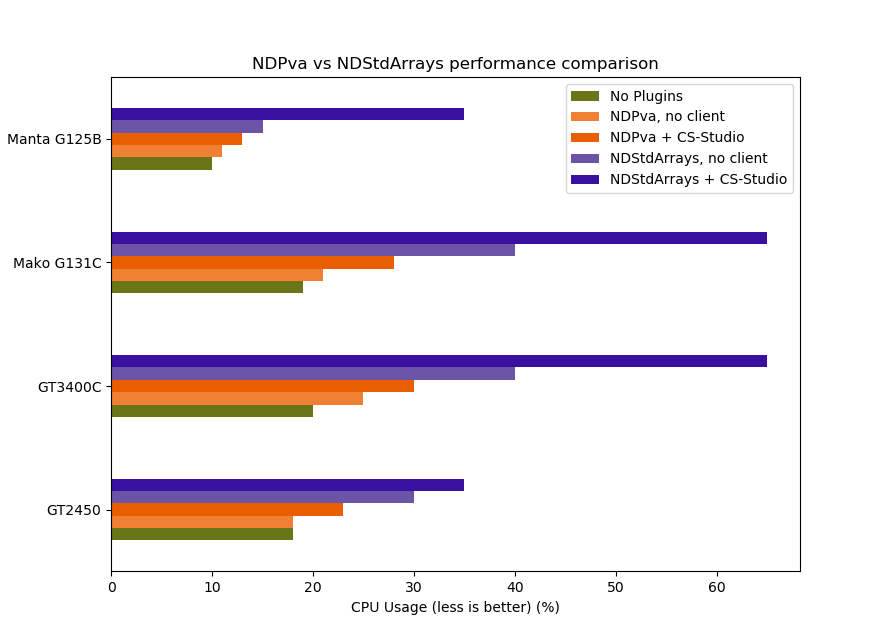

NDPluginPva
- author:
Bruno Martins, Brookhaven National Laboratory
Overview
This plugin converts NDArray data produced by asynNDArrayDrivers into the EPICSv4 normative type NTNDArray. An embedded EPICSv4 server is created to serve the new NTNDArray structure as an EPICSv4 PV. A description of the structure of the NTNDArray normative type is available.
NDPluginPva defines the following parameters.
Parameter Definitions in NDPluginPva.h and EPICS Record Definitions in NDPva.template |
||||||
|---|---|---|---|---|---|---|
Parameter index variable |
asyn interface |
Access |
Description |
drvInfo string |
EPICS record name |
EPICS record type |
NDPluginPvaPvName |
asynOctet |
r/o |
Name of the EPICSv4 PV being served |
PV_NAME |
$(P)$(R)PvName_RBV |
waveform |
Configuration
The NDPluginPva plugin is created with the NDPvaConfigure command,
either from C/C++ or from the EPICS IOC shell.
NDPvaConfigure (const char *portName, int queueSize, int blockingCallbacks,
const char *NDArrayPort, int NDArrayAddr, const char *pvName,
size_t maxMemory, int priority, int stackSize)
For details on the meaning of the parameters to this function refer to the detailed documentation on the NDPvaConfigure function in the NDPluginPva.cpp documentation and in the documentation for the constructor for the NDPluginPva class.
The following MEDM screen for the NDPluginPva. The only item not in the base class screen is the readback of the EPICS V4 PV name.
Starting the pvAccess server
In order to actually serve the EPICSv4 PV created by this plugin it is
necessary to call startPVAServer.
Anedoctal Performance Numbers
A performance test was conducted at NSLS-II to evaluate the benefits of using NDPva instead of NDStdArrays to transport images for visualization purposes. Eight AVT cameras of four different models were used:
Model |
Resolution |
Frame Rate |
|---|---|---|
Manta G125B (3 instances) |
1292x964x1 |
30 Hz |
GT2450 (3 instances) |
2448x2050x1 |
15 Hz |
GT3400C (1 instance) |
3384x2704x3 (binned to 1692x1352x3) |
17 Hz |
Mako G131C (1 instance) |
1280x1024x3 |
28 Hz |
All camera IOCs were concurrently running and acquiring on a HP ProLiant DL360 Gen9 server with 32GB of memory and a 12-core Xeon E5-2620 @ 2.40 GHz CPU. No other resource intensive process was running during the tests. This server was connected to a switch via a 10Gbps fiber link, as was the client computer. All cameras were individually connected via 1Gbps copper links to the switch. The client computer was a HP Z640 Workstation with 32GB of memory and 12-core Xeon E5-1650 @ 3.5GHz CPU, running CS-Studio version 4.3.3. Five tests were performed:
Baseline: Cameras acquiring, no plugins enabled
NDPva, no CS-Studio: Cameras acquiring, only NDPva enabled, images not being displayed in CS-Studio
NDPva + CS-Studio: Cameras acquiring, only NDPva enabled, images being displayed in CS-Studio
NDStdArrays, no CS-Studio: Cameras acquiring, only NDStdArrays enabled, images not being displayed in CS-Studio
NDStdArrays + CS-Studio: Cameras acquiring, only NDStdArrays enabled, images being displayed in CS-Studio
The results of these tests are tabulated as follows:
CPU Usage |
|||||
|---|---|---|---|---|---|
Camera |
Baseline |
NDPva, no CS-Studio |
NDPva + CS-Studio |
NDStdArrays, no CS-Studio |
NDStdArrays + CS-Studio |
Cam 1: Manta G125B |
10% |
11% |
13% |
15% |
35% |
Cam 2: Manta G125B |
10% |
11% |
13% |
15% |
35% |
Cam 3: GT2450 |
18% |
18% |
23% |
30% |
65% |
Cam 4: Manta G125B |
10% |
11% |
13% |
15% |
35% |
Cam 5: GT2450 |
18% |
18% |
23% |
30% |
65% |
Cam 6: GT2450 |
18% |
18% |
23% |
30% |
65% |
Cam 7: GT3400C |
20% |
25% |
30% |
40% |
65% |
Cam 8: Mako G131C |
19% |
21% |
28% |
40% |
65% |
And, in form of a graph:
